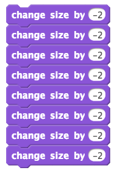
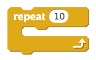
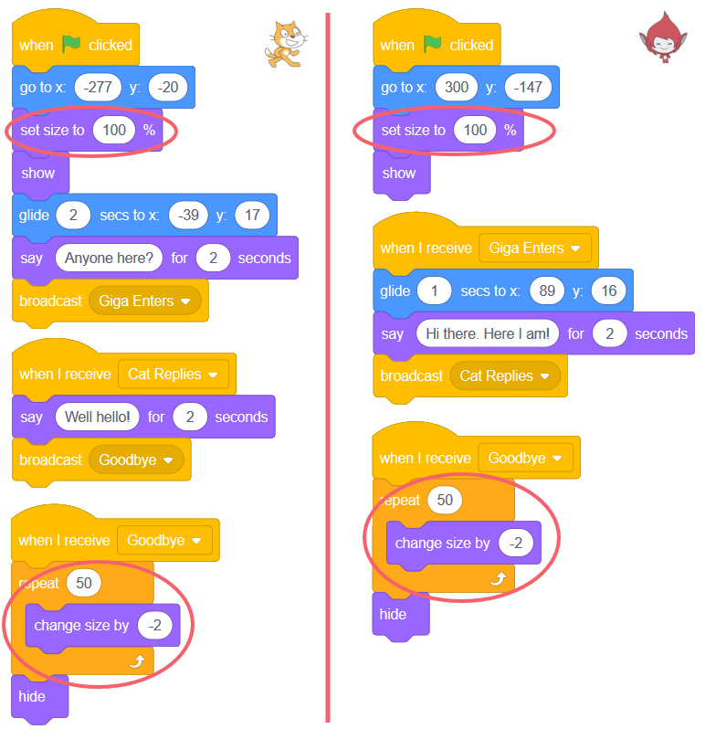
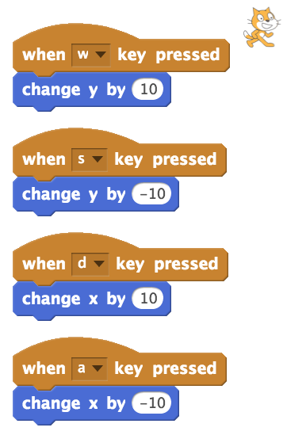

2. Controlling a Character with WASD (Repetition and Conditionals)¶
Quick Overview of Day
Introduce the repeat block by having a sprite shrink before disappearing. Demonstrate simple event-driven programming by moving a sprite with WASD using the when key pressed block. Use the forever block, combined with the if-then block to improve the motion of the sprite.
If you’d prefer to watch a video, the following video demonstrates the same ideas I’ve described in text below.
2.1. Changing the Size of a Character¶
To begin today, we are going to adapt the example created yesterday. To open projects you have made previously, log into Scratch and look for the “My Stuff” folder icon on the top right hand side of the page.

If we want to have a sprite appear larger or smaller than the default size, we can use the change size by 10 block, which you can find in the Looks tab.
Drag the block shown above onto the scripts area, and double click it. You should see the current sprite get a bit larger. Experiment by changing the number 10 to different values. Be sure to try both positive and negative values!
2.2. Repetition¶
We would like to adapt our previous project to have the characters shrink before they disappear. In order to accomplish this, we need to use the change size by # block multiple times. One way to do this would be to put a large number of blocks one after another, like this:
Although this begins to do what we want, to have this shrink our character completely, we would need to have 50 of these blocks. There must be a better way.
As it turns out, one thing that computers are really good at is repeating commands over and over again. Rather than duplicating the exact same command over and over, we can enclose the command inside a repeat block, and just tell the computer how many times it should repeat the command. You can find the repeat block under the Control tab.
To make a character shrink, we simply change it’s size by some negative amount. If we were to change the size of the character by -50, however, the character would make a sudden jump from being quite large to being half as large as before. Using the repeat block with a smaller number in the change size block allows us to make the shrinking process appear much smoother. Adapt the previous code to make it look like the following (note that the changes are circled in red):
2.3. Movement Using WASD - Version 1¶
If we want to control the motion of a sprite on the screen, one way we can do it is using the classic WASD controls on a keyboard, where
- w moves the character up
- a moves the character left
- s moves the character down
- d moves the character right
Under the Events tab, there’s a when key pressed block. We can use this to have a sprite react to keyboard input.
In order to control the motion of a sprite, we need to recall the coordinate system that Scratch uses. Remember that the coordinate plane in Scratch is set up in the same way as the coordinate plane you are used to in math class, as shown in the image below.

In order for a sprite to move up on the screen, we need to increase the y value of coordinate. To move it down, we need to decrease the y value. To move right, we would increase the x value. Finally, to move left, we would decrease the x value. To make this happen, we can use the change x by and change y by blocks found in the Motion tab. To move in the correct direction, we just need to put in positive/negative change by values for x and y, depending on which direction we want the sprite to move. Recreate the following:
Take a minute to experiment with this first attempt at WASD motion. You will quickly notice that there are a few issues with the way the motion is happening. The most obvious problem is that the motion is quite jittery. To see this, hold down one of the WASD keys. The sprite begins to move, hesitates for a moment, then continues to move.
The hesitation in the sprite movement happens because the operating system on your computer has a built in delay before it accepts multiples of the same character being sent from your keyboard. This is a very important feature of the operating system, and is not something we can (or would want to) override. If the delay did not exist, when you were typing anything on your computer, you would need to be incredibly careful about how long you held down each key, or multiple copies of the current letter would show up.
If we cannot override this feature of your operating system, how can we improve the WASD movement that we created above? The answer is to use some new blocks that allow us to repeatedly ask the computer whether a particular key is pressed, as described below.
2.4. Movement Using WASD - Version 2¶
When we made a character shrink in the code above, we used a repeat 50 block to have the computer do a particular instruction (change size) multiple times. Another block that allows us to repeat something multiple times is the forever block:

As you have guessed, anything inside the forever block will continue to be repeated over and over, until the program ends (or you tell the computer to stop the loop). In this case, the thing that we want to have repeated over and over is asking the computer whether a specific key is currently being pressed.
Whenever we want to ask the computer a question, we use an if-then block:

The blank inside the if-then block can be filled in by any question that gives a True or False answer. Consider the following question (the question key space pressed is from the Sensing tab):

This question will be True if the spacebar is pressed when the question is asked, and False if the spacebar is not pressed when the question is asked. Any code that you put inside the if-then block will only be executed if the question evaluates to True.
If we put a number of these questions inside a forever block, we can ask the questions many times each second. This allows us to create a much smoother version of WASD motion, as shown below.

2.5. Practice Problem¶
Work on your first Scratch assignment, for any remaining time.
Note
If your teacher did not assign you a project, you may want to consider making a short story to practice your Scratch skills. Be sure to utilize broadcasts, repeat blocks, and if-then blocks.